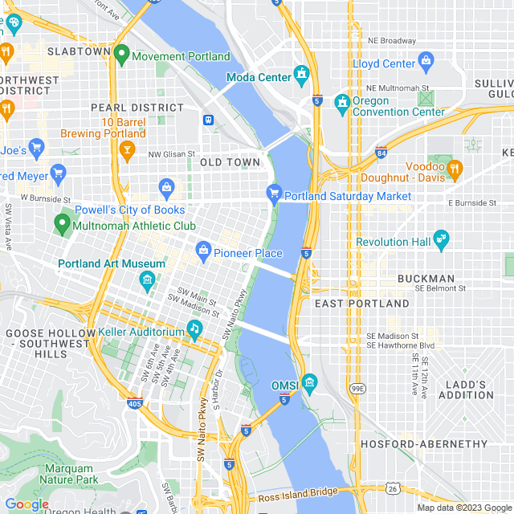
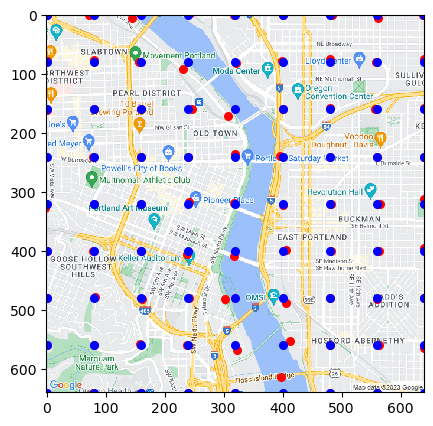
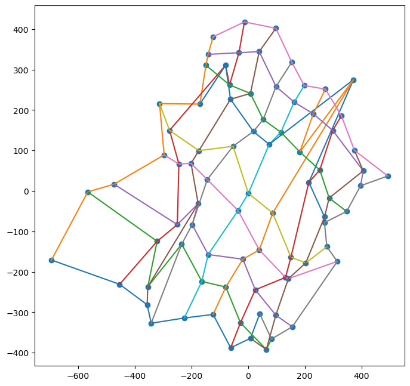
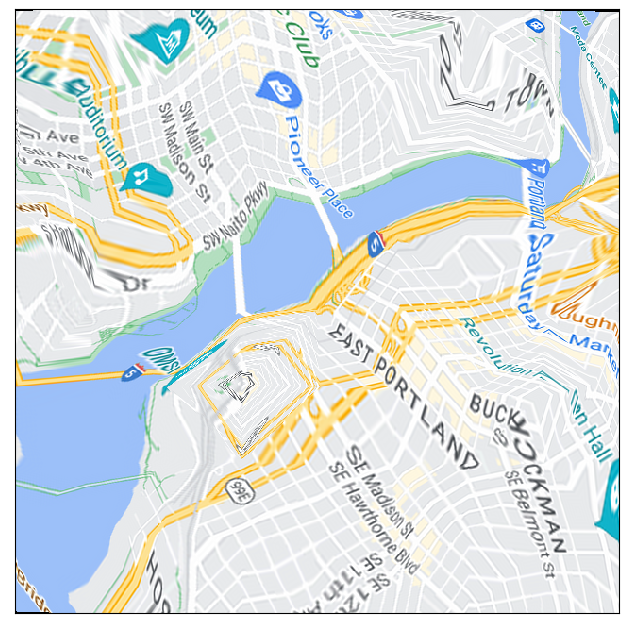
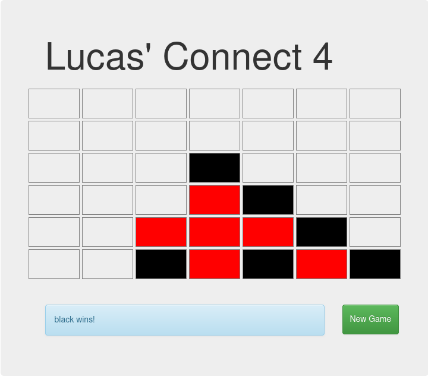

Programming
See all my project on GitHub.Maps with respect to travel time
The goal of this project is to distort physical distance maps so that distance reflects travel time between all pairs of points. This might sound like an "isochrone", but those are maps that only show travel time from a single origin. We want a map where all distances between any pair of points depicts travel time. We should point out that this is impossible for many reasons, but how close can we get?
We start with a city map like this.
Then we pick out some key points and compute the pairwise travel time between them all.
Next we do something to transform that grid of points so they reflect pairwise travel time better (currently using a machine learning algorithm but more experementation is needed).
Finaly, we interpolate the tranformation sending the original grid of points to the new points. This can really mess up the image!
This project needs a bit of work but it is fun to play around with the possabilities!
Connect 4
An implimentation of connect 4 in JavaScript. Click here to play!